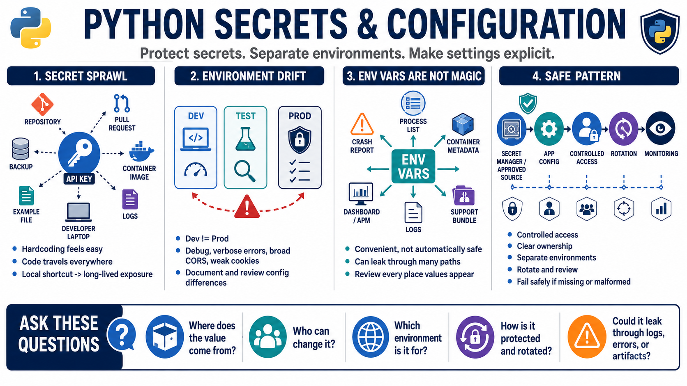

Secrets, Configuration, and Debug Mistakes
Connecting to LMS... Progress: in progress

Narration
Secrets are easy to mishandle because they are often needed early in development: API keys, database credentials, tokens, connection strings, certificates, private keys, and service account material. Hardcoding them may feel convenient, but source code travels through repositories, pull requests, backups, container images, logs, shared examples, and developer machines. A secret that starts as a local shortcut can become a long-lived exposure across many environments.
Configuration should be environment-aware and reviewed. Development settings often prioritize speed and visibility. Production settings should prioritize least privilege, safe defaults, controlled diagnostics, and predictable behavior. Debug mode, verbose errors, permissive host settings, broad CORS rules, weak cookie settings, test credentials, and development-only bypasses can become serious issues when they are promoted accidentally or left undocumented.
Environment variables are common for configuration, but they are not automatically safe. They can be exposed through process listings, crash reports, container metadata, deployment dashboards, logs, or support bundles depending on the environment. The secure pattern is not a single storage location. It is controlled access, clear ownership, rotation, separation between environments, minimal exposure, and review of every place secrets may appear.
Good Python systems avoid logging secrets, returning them in errors, embedding them in generated artifacts, or copying them into places with broader access. They also make configuration choices explicit and testable. A secure configuration approach should answer where a value comes from, who can change it, what environment it belongs to, how it is protected, how it is rotated, and what happens when it is missing or malformed.